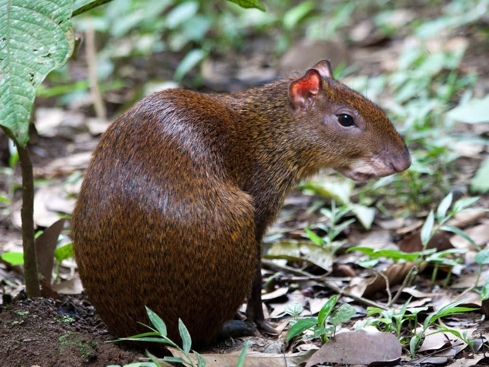
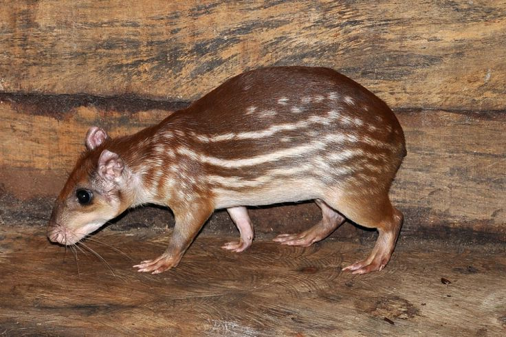

Mamíferos
Ocelote
Leopardus pardalis
Preocupación Menor
Ver más información

Agutí Centroamericano
Dasyprocta punctata
Preocupación Menor
Ver más información
Saino
Pecari tajacu
Preocupación Menor
Ver más información
Mono Congo
Alouatta palliata
Preocupación Menor
Ver más información
Mono Cara Blanca
Cebus capucinus
Preocupación Menor
Ver más información

Tepezcuintle
Cuniculus paca
Preocupación Menor
Ver más información
Venado Cola Blanca
Odocoileus virginianus
Preocupación Menor
Ver más información
Tayra
Eira barbara
Preocupación Menor
Ver más información
Ardilla de Variegada
Sciurus variegatoides
Preocupación Menor
Ver más información
← Volver a categorías